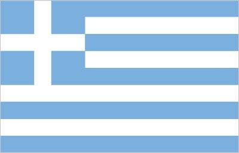
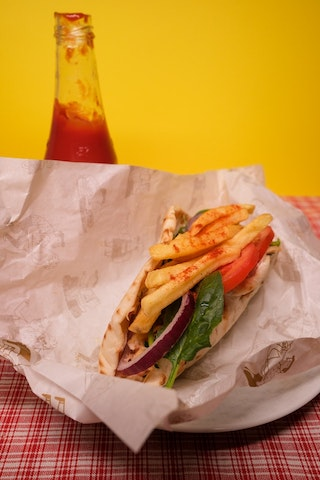

Greece
I like visiting Greece mostly for summer holidays, since there are many great beaches. From the culinary adventure approach, I like meals in Greece because there are dozens of dishes with similar tastes and different variations as in Turkey. I like exploring the differences and similarities between these two coasts of the Aegean Sea. Most particularly, in Greece gyro with its special sauce is my favorite fastfood and my first choice even for a meal.

Greece Flag (Image from CIA World Factbook)

Gyro as a Meal and Fastfood for a Voyager (Image from Pexels)